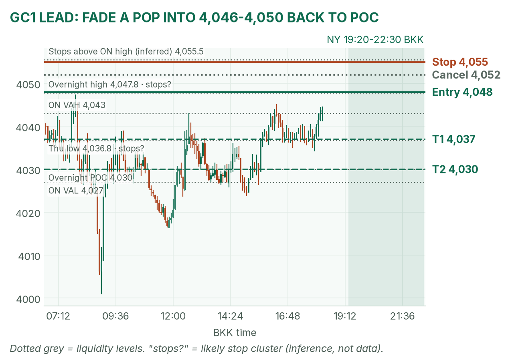
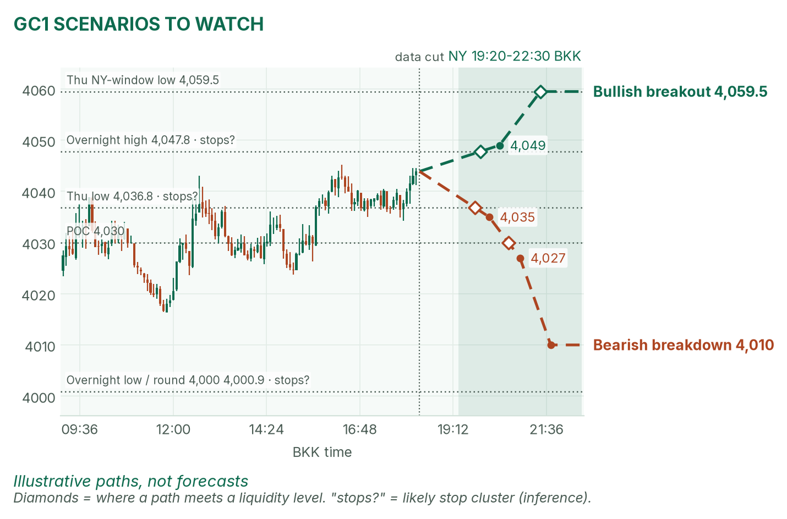
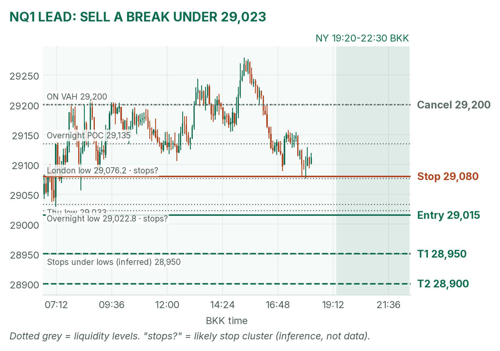
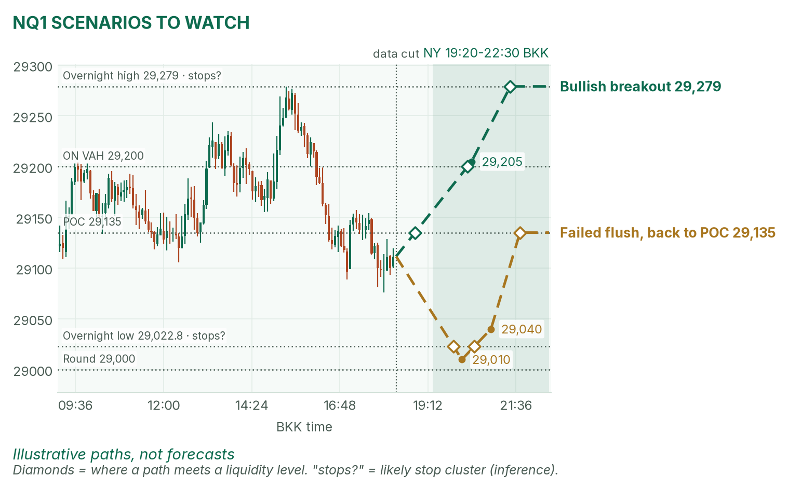

Gold is back at its overnight ceiling. Nasdaq waits on two US releases.
Window 19:20–22:30 BKK. Data cut 18:20 BKK: GC 4,043.9, NQ 29,111.5 (TopstepX Z26, last complete 5m bar). Levels only. Ideas, not advice.
Summary
GC: fade a failed pop into 4,046–4,050. Stop 4,055, target 4,030, the overnight POC (2.6R). About 40%.
NQ: sell a 5m close under the overnight low, 29,022.75. Stop 29,080, target 28,900 (1.8R). About 38%.
US flash PMIs at 20:45 and Michigan at 21:00 land inside the window. No entries 20:40–20:47 or 20:55–21:02.
Flat by 22:30, no matter what.
The market story
Gold fell 2.2% on Thursday and flushed to 4,000.9 at 09:00 this morning. Dip buyers defended the round number, and price has climbed back to 4,044, right under the overnight high of 4,047.8. That's a mean reversion (price snapping back toward value) inside a six-session downtrend. The headwind is yields. Oil near $115 Brent revives rate-hike bets, and the US 10-year is 4.997%, a hair under 5%.
Nasdaq futures are flat after Thursday's 2.9% drop. Overnight they held 29,022.75–29,279, and the London high faded.
How I read it: gold is testing a ceiling; Nasdaq is sitting just above a floor that the market will test if the US data runs hot.
News (BKK)
Time
Event
Forecast
Prior
Read
20:45
US flash services PMI
57.9
58.8
Hot (above forecast) lifts yields: bad for gold and NQ. Cold helps both.
20:45
US flash manufacturing PMI
55.4
55.9
21:00
Michigan sentiment, final / 1-yr inflation expectations
46.3 / 4.7%
n/a
Expectations above 4.7% is the hot read.
No-trade zones: 20:40–20:47 and 20:55–21:02. No Fed speakers (quiet period).
Levels to watch
Level
GC
NQ
Overnight high
4,047.8
29,279
Overnight value area
4,027–4,043
29,105–29,200
Overnight POC (busiest price)
4,030
29,135
Overnight low
4,000.9
29,022.75
Thursday high / low
4,164.3 / 4,036.8
29,993.25 / 29,033
Typical window range (median / 80th pct, 20 days)
41 / 60 pts
304 / 410 pts
Gold (GC1)
Bias: bearish on the higher timeframe, with price at the top of the overnight range. My NY gold rule takes the COMEX opening range from 19:20 and fades its edges back to the POC.
The trade: fade a failed pop
Entry
4,046–4,050 (plan 4,048): a pop to the overnight high that closes back below it on 5 minutes, after the COMEX range is set
Stop
4,055: above the overnight high, where buy stops likely sit (an inference)
Targets
1R partial 4,041 · 4,037 (Thursday's low) · full target 4,030, the overnight POC (2.6R)
Cancel
A 5m close above 4,052 before entry, price trades 4,030 first
Probability
~40%, an estimate. Basis: NY gold opening ranges mostly failed in my Aug–Oct study (not significant); 18 points to target is under half a typical window, and the stop is about 2 five-minute ATRs (average bar size, 3.3 pts).
Why: sell where the bounce ran out, with the trend. No pop, no trade. I won't short 4,044 in the middle. April half-agrees: she sees yields capping the bounce, but says gold's rebound stays alive above 4,036.8. Use VWAP (the volume-weighted average price) only as a filter after 19:50.

GC 5-minute bars to 18:20 BKK, window shaded. The 4,000.9 flush, then the 4,043–4,048 ceiling.

Illustrative paths, not forecasts: the other two setups at the liquidity levels.
Scenarios to watch
Bullish breakout: two 5m closes above 4,047.8 on a cold PMI. Aims for 4,059.5, Thursday's NY-window low.
Bearish breakdown: a 15m close below 4,036.8, then 4,027 (value low) on a hot print. Aims for about 4,010.
Nasdaq (NQ1)
Bias: mildly bearish. Thursday closed near its low, yields are creeping up, and the overnight high faded. My NQ rule trades breaks of the fixed 5-minute range after the 20:30 stock open.
The trade: bearish breakdown
Entry
29,015 on a 5m close below 29,022.75 (overnight low) and the 20:30–20:35 range low, after 21:02
Stop
29,080: back above the London low (29,076.25)
Targets
1R partial 28,950 · full target 28,900 (1.8R)
Cancel
NQ trades 29,200 (overnight value high) before entry, or no break by 22:00
Probability
~38%, an estimate. Basis: NQ 5-minute range breakouts averaged +0.37R in my study (31 sessions, not significant); 115 points to target is under half a typical window.
Why: stops cluster under a double low (29,022.75 and Thursday's 29,033). April agrees: her down case is Nasdaq breaking 29,022.75. A hot PMI is the push; a cold one cancels my interest.

NQ 5-minute bars to 18:20 BKK, window shaded. The trigger sits just under the overnight floor.

Illustrative paths, not forecasts: breakout up and failed flush.
Scenarios to watch
Bullish breakout: a 5m close above the opening range and 29,200. Aims for 29,279, the overnight high.
Failed flush: a poke under 29,022.75 that closes back above 29,033 within 15 minutes. Aims for the POC, 29,135.
6E (not traded in NY): 1.1219, near the day's low of 1.1208 after weak euro-area PMIs. This morning's London short hit its target.
Before you click
ORB bases. GC NY: COMEX 19:20 range, ends at the first candle under half the average volume of the first two, fade to POC. NQ: fixed 5-minute range after 20:30, trade breakouts.
Checklist. 1) Room to today's max loss? 2) Within daily rules? 3) No release within 30 minutes? 4) Agrees with the bias? 5) At a marked level? 6) Setup tagged? 7) Entry, stop, 1R partial, target set? 8) Calm, not chasing?
Reset (60 seconds). Breathe in 4, hold 4, out 6, five times. Name the feeling in one word. Say the plan aloud. "Eager" or "frustrated"? Wait 5 minutes.